Application n°2
library(knitr)
library(dplyr, quietly = TRUE,warn.conflicts = F)
library(car,warn.conflicts = F,quietly=T)
library(readxl)
library(sf)
library(mapsf)L’objectif de la présente est d’analyser un tableau de données d’enquête permettant de décrire les revenus des ménages et un certain nombre d’indicateurs de confort en fonction d’attributs du chef de ménage ou du ménage proprement dit.
Nadège : (…)
A. Données
Nadège : (…)
Importation
On importe les données depuis Excel
don <- read_excel("FIN-BENIN-2018/data/select.xls",sheet = "data")
kable(head(don), caption = "Premières lignes du tableau")| hou_wgt | hou_mbr | hou_roo | hou_inc | hou_agr | hea | hea_age | hea_sex | loc_dep | loc_urb | loc_rur |
|---|---|---|---|---|---|---|---|---|---|---|
| 117.5442 | 8 | 1 | 20000 | Only | TRUE | 65 | Female | ALIBORI | FALSE | TRUE |
| 116.5713 | 4 | 1 | 20000 | Only | TRUE | 40 | Male | ALIBORI | FALSE | TRUE |
| 116.5713 | 9 | 3 | 125000 | Only | TRUE | 35 | Male | ALIBORI | FALSE | TRUE |
| 207.5032 | 7 | 3 | 20000 | Only | TRUE | 28 | Male | ALIBORI | FALSE | TRUE |
| 207.5032 | 7 | 4 | 20000 | Only | TRUE | 20 | Male | ALIBORI | FALSE | TRUE |
| 566.2480 | 7 | 5 | 20000 | Only | TRUE | 25 | Male | ALIBORI | TRUE | FALSE |
Liste des variables
meta <- read_excel("FIN-BENIN-2018/data/select.xls",sheet = "meta")
kable(meta,caption = "Liste des variables")| Code | Def |
|---|---|
| hou_wgt | poids statistique du ménage |
| hou_mbr | nombre de membres du ménage |
| hou_roo | nombre de pièces servant de chambre à coucher |
| hou_inc | revenu global du ménage en CFA |
| hou_agr | revenu d’activité agricole (exclusive, partielle, absente) |
| hea | le répondant est chef du ménage (TRUE/FALSE) |
| hea_age | âge du chef de ménage |
| hea_sex | sexe du chef de ménage |
| loc_dep | département de résidence du ménage |
| loc_urb | milieu urbain (TRUE/FALSE) |
| loc_rur | milieu rural (TRUE/FALSE) |
N.B.1: Nous avons éliminé du tableau initial les individus dont le revenu par personne se situait dans les 5% les plus élevés et les 5% les plus faibles, ainsi que les données incomplètes. Il ne reste donc plus que 4685 observations contre un peu plus de 6000 dans le tableau initial. La pondération n’est donc plus correcte pour effectuer des redressements et elle ne sera pas utilisée.
N.B.2: Le revenu total du ménage a été obtenu soit de façon absolue (la personne donne un chiffre unique), soit par tranche selon une grille de réponse. Dans ce dernier cas, nous avons pris comme valeur le centre de la tranche. Pour les tranches extrêmes nous avons alloué la valeur 20000 pour la modalité “moins de 40000” et la valeur 1000000 popur la modalité “plus de 750000”. Ceci entraîne donc une concentration artificielle des valeurs autour de 20000.
Nadège (…)
Ajout de nouvelles variables
Nous construisons à partir du tableau deux nouvelles variables :
- hou_inc_cap : revenu moyen par habitant d’un ménage
- hou_roo_occ : nombre d’individu par pièces de couchage
don$hou_inc_cap <- don$hou_inc/don$hou_mbr
don$hou_roo_occ <- don$hou_mbr/don$hou_rooSélection
On n’opère aucune sélection dans l’immédiat
sel<-donnadège ? (possibilité de réduire l’échantillon ?)
Paramètres principaux
On résume rapidement les variables retenues
summary(sel) hou_wgt hou_mbr hou_roo hou_inc
Min. : 29.49 Min. : 1.000 Min. : 1.000 Min. : 2000
1st Qu.: 187.91 1st Qu.: 3.000 1st Qu.: 2.000 1st Qu.: 20000
Median : 259.77 Median : 5.000 Median : 2.000 Median : 20000
Mean : 296.17 Mean : 5.612 Mean : 2.555 Mean : 45208
3rd Qu.: 373.05 3rd Qu.: 7.000 3rd Qu.: 3.000 3rd Qu.: 75000
Max. :1374.73 Max. :45.000 Max. :22.000 Max. :1000000
hou_agr hea hea_age hea_sex
Length:4865 Length:4865 Min. :15.00 Length:4865
Class :character Class :character 1st Qu.:28.00 Class :character
Mode :character Mode :character Median :37.00 Mode :character
Mean :39.92
3rd Qu.:50.00
Max. :95.00
loc_dep loc_urb loc_rur hou_inc_cap
Length:4865 Length:4865 Length:4865 Min. : 1818
Class :character Class :character Class :character 1st Qu.: 4000
Mode :character Mode :character Mode :character Median : 6667
Mean : 9333
3rd Qu.:12500
Max. :30769
hou_roo_occ
Min. : 0.250
1st Qu.: 1.500
Median : 2.000
Mean : 2.444
3rd Qu.: 3.000
Max. :14.000 Fonds de carte
Nous disposons d’un fonds de carte (source : IPUMS) permettant de cartographier éventuellement les résultats de certaines analyses par département.
map<-st_read("FIN-BENIN-2018/shp/geo1_bj2013.shp", quiet=T)Il permet d’ores et déjà de repérer la position des départements
mf_map(map, type="typo",var="ADMIN_NAME")
mf_label(map,var = "DEPT2013" )
mf_layout(title = "Les 12 départements du Bénin",credits = "IPUMS",arrow = F,frame =T)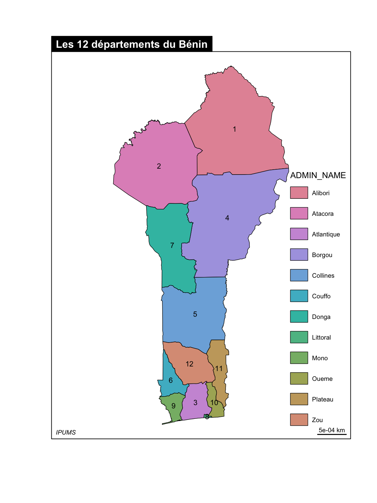
Modélisation du revenu total des ménages
On se propose d’expliquer la variable hou_inc qui mesure le revenu total des ménages en fonction du nombre de membres du ménage.
Forme de la distribution
Y<-sel$hou_inc
labelY<-"Revenu total "
hist(Y, main=labelY,breaks = 12)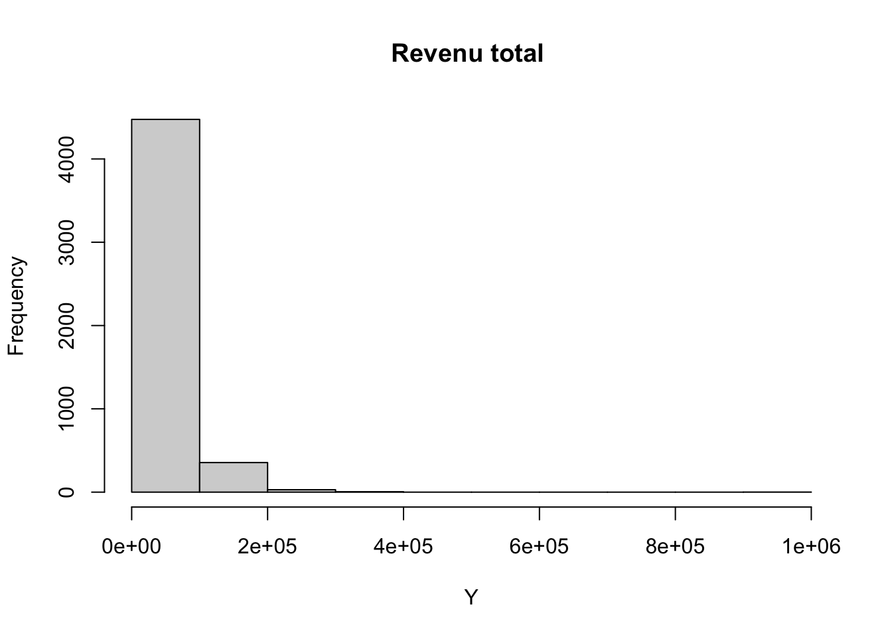
hist(log10(Y), main=labelY, xlab = "logarithme décimal", breaks=12)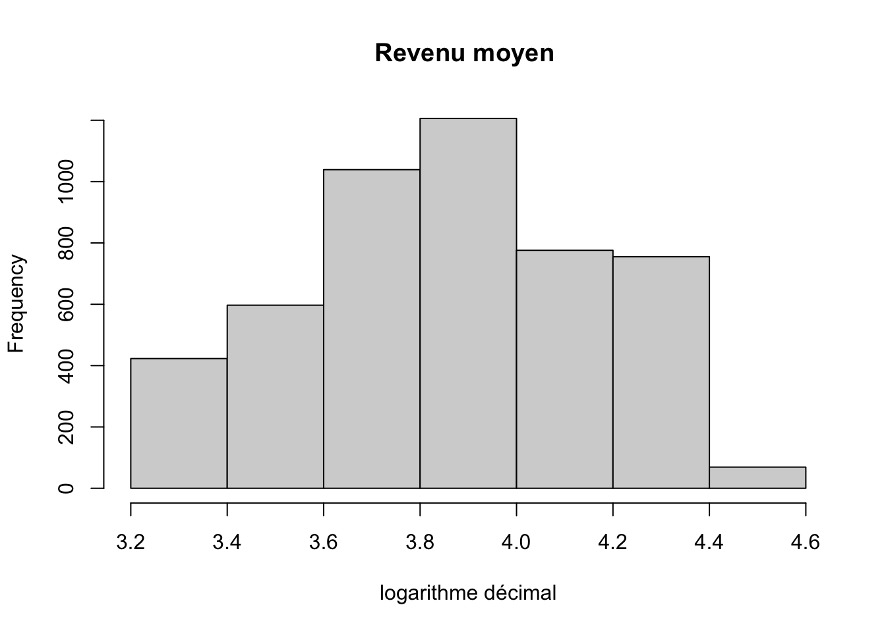
La distribution comporte une forte anomalie statistique liée au fait que nous avons attribué la valeur 20000 CFA à tous les ménages gagnant “moins de 40000 CFA”.
Valeurs exceptionnelles
boxplot(Y, main=labelY, horizontal=T)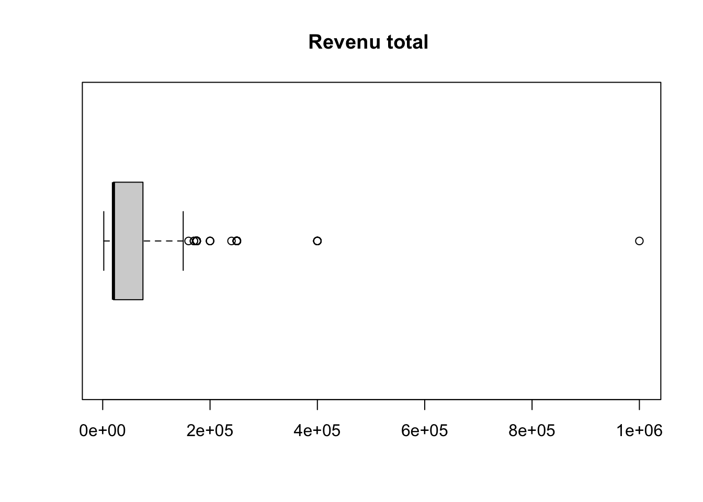
boxplot(log(Y), main=labelY, horizontal=T, xlab = "Logarithme décimal")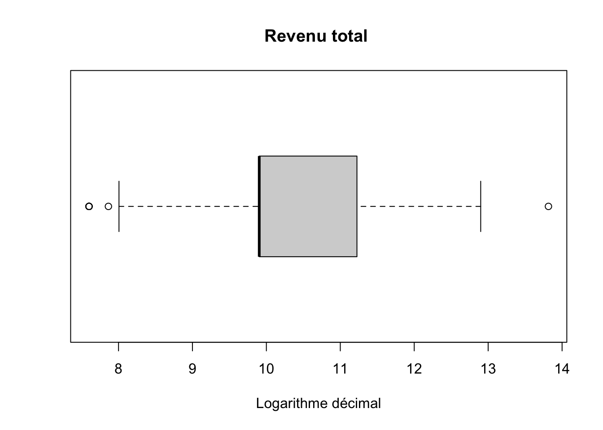
La distribution comporte des valeurs exceptionnelles mais celles-ci disparaissent pour la plupart après transformation logarithmique.
Normalité
shapiro.test(Y)
Shapiro-Wilk normality test
data: Y
W = 0.65732, p-value < 2.2e-16shapiro.test(log(Y))
Shapiro-Wilk normality test
data: log(Y)
W = 0.88535, p-value < 2.2e-16La distribution n’est pas gaussienne et elle ne le devient pas non plus après transformation logarithmique en raison de la cocnentration des valeurs autour de 20000. On décide de poursuivre l’analyse en utilisant désormais le log. du revenu.
Modèle 1 : Ajustement linéaire
On commence par un modèle linéaire de type Y = aX+b
Y<-sel$hou_inc
labelY <- "revenu total"
X2<-sel$hou_mbr
labelX2 <-"nombre de membres du ménage"
mod<-lm(Y~X2)
summary(mod)
Call:
lm(formula = Y ~ X2)
Residuals:
Min 1Q Median 3Q Max
-114018 -21744 -8073 14585 731681
Coefficients:
Estimate Std. Error t value Pr(>|t|)
(Intercept) 13422.2 1030.5 13.03 <2e-16 ***
X2 5664.4 156.8 36.11 <2e-16 ***
---
Signif. codes: 0 '***' 0.001 '**' 0.01 '*' 0.05 '.' 0.1 ' ' 1
Residual standard error: 37390 on 4863 degrees of freedom
Multiple R-squared: 0.2115, Adjusted R-squared: 0.2113
F-statistic: 1304 on 1 and 4863 DF, p-value: < 2.2e-16plot(X2,Y, cex=1, col="black",pch=20, xlab=labelX2,ylab=labelY)
abline(mod,col="red")
abline(v=mean(X2),lty=2, lwd=2)
abline(h=mean(Y),lty=2)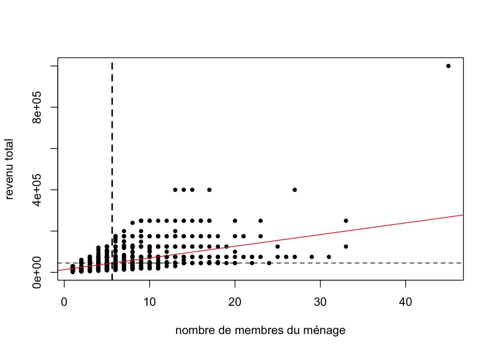
La relation est assez forte (r2= 21.1%) mais très significative (p < 0.001). Toutefois elle est visiblement influencée par une valeur exceptionnelle correspondant à un ménage de plus de 45 personnes déclarant un revenu d’un million de CFA. On élimine ce cas exceptionnel (outlier) avant de refaire le calcul :
Modèle 1-bis : Ajustement linéaire sans outlier
sel<-sel %>% filter(hou_inc < 500000)
Y<-sel$hou_inc
labelY <- "revenu total"
X2<-sel$hou_mbr
labelX2 <-"nombre de membres du ménage"
mod<-lm(Y~X2)
summary(mod)
Call:
lm(formula = Y ~ X2)
Residuals:
Min 1Q Median 3Q Max
-100621 -21908 -7194 13377 316949
Coefficients:
Estimate Std. Error t value Pr(>|t|)
(Intercept) 16194.4 997.1 16.24 <2e-16 ***
X2 5142.8 152.5 33.73 <2e-16 ***
---
Signif. codes: 0 '***' 0.001 '**' 0.01 '*' 0.05 '.' 0.1 ' ' 1
Residual standard error: 35840 on 4862 degrees of freedom
Multiple R-squared: 0.1896, Adjusted R-squared: 0.1894
F-statistic: 1138 on 1 and 4862 DF, p-value: < 2.2e-16plot(X2,Y, cex=1, col="black",pch=20, xlab=labelX2,ylab=labelY)
abline(mod,col="red")
abline(v=mean(X2),lty=2, lwd=2)
abline(h=mean(Y),lty=2)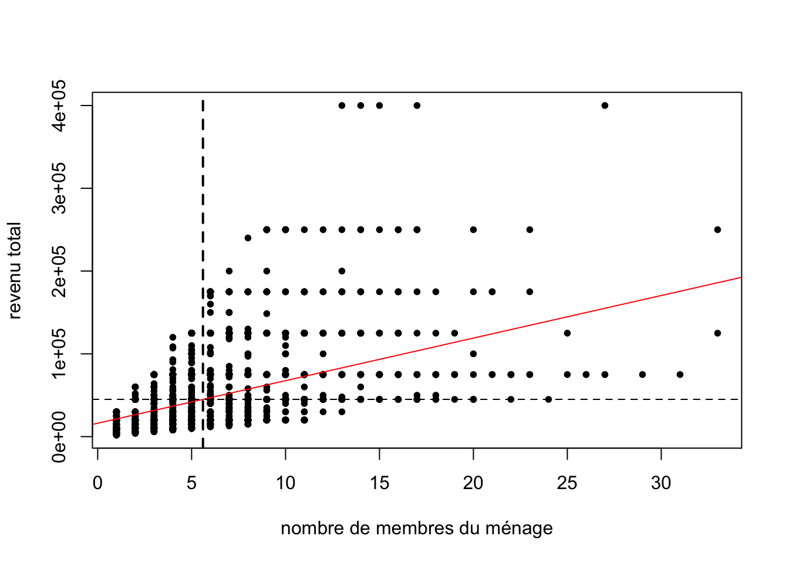
La relation est un peu moins forte (r2 =19%) mais toujours très significative (p < 0.001). Toutefois elle est incorrecte sur le plan statistique car elle comporte visiblement une forte hétéroscédasticité (i.e. variance des résidus non homogène). Il faut donc procéder à des transformations logarithmiques sur X et/ou Y.
Modèle 2 : Ajustement exponentiel
On passe à un modèle exponentiel de type log(Y) = aX+b
Y<-log(sel$hou_inc)
labelY <- "revenu total (log)"
X2<-sel$hou_mbr
labelX2 <-"nombre de membres du ménage"
mod<-lm(Y~X2)
summary(mod)
Call:
lm(formula = Y ~ X2)
Residuals:
Min 1Q Median 3Q Max
-2.3847 -0.4673 -0.1379 0.5362 1.7580
Coefficients:
Estimate Std. Error t value Pr(>|t|)
(Intercept) 9.88931 0.01824 542.12 <2e-16 ***
X2 0.09630 0.00279 34.52 <2e-16 ***
---
Signif. codes: 0 '***' 0.001 '**' 0.01 '*' 0.05 '.' 0.1 ' ' 1
Residual standard error: 0.6558 on 4862 degrees of freedom
Multiple R-squared: 0.1969, Adjusted R-squared: 0.1967
F-statistic: 1192 on 1 and 4862 DF, p-value: < 2.2e-16plot(X2,Y, cex=1, col="black",pch=20, xlab=labelX2,ylab=labelY)
abline(mod,col="red")
abline(v=mean(X2),lty=2, lwd=2)
abline(h=mean(Y),lty=2)
Ce nouveau modèle demeure significatif (p<0.001), explique un peu plus de variance (r2 = 20%) et élimine l’effet de l’hétéroscédasticité. Mais on voit que le nuage de point affiche désormais une courbure ce qui crée une autocorrélation des résidus indiquant que le modèle n’est toujours pas correct d’un point de vue statistique.
Modèle 3 : Ajustement puissance
On passe à un modèle exponentiel de type log(Y) = a.log(X)+b
Y<-log(sel$hou_inc)
labelY <- "revenu total (log)"
X2<-log(sel$hou_mbr)
labelX2 <-"nombre de membres du ménage (log)"
mod<-lm(Y~X2)
summary(mod)
Call:
lm(formula = Y ~ X2)
Residuals:
Min 1Q Median 3Q Max
-2.02346 -0.56251 -0.08335 0.51347 1.93356
Coefficients:
Estimate Std. Error t value Pr(>|t|)
(Intercept) 9.62437 0.02391 402.48 <2e-16 ***
X2 0.52293 0.01432 36.52 <2e-16 ***
---
Signif. codes: 0 '***' 0.001 '**' 0.01 '*' 0.05 '.' 0.1 ' ' 1
Residual standard error: 0.6483 on 4862 degrees of freedom
Multiple R-squared: 0.2152, Adjusted R-squared: 0.2151
F-statistic: 1333 on 1 and 4862 DF, p-value: < 2.2e-16plot(X2,Y, cex=1, col="black",pch=20, xlab=labelX2,ylab=labelY)
abline(mod,col="red")
abline(v=mean(X2),lty=2, lwd=2)
abline(h=mean(Y),lty=2)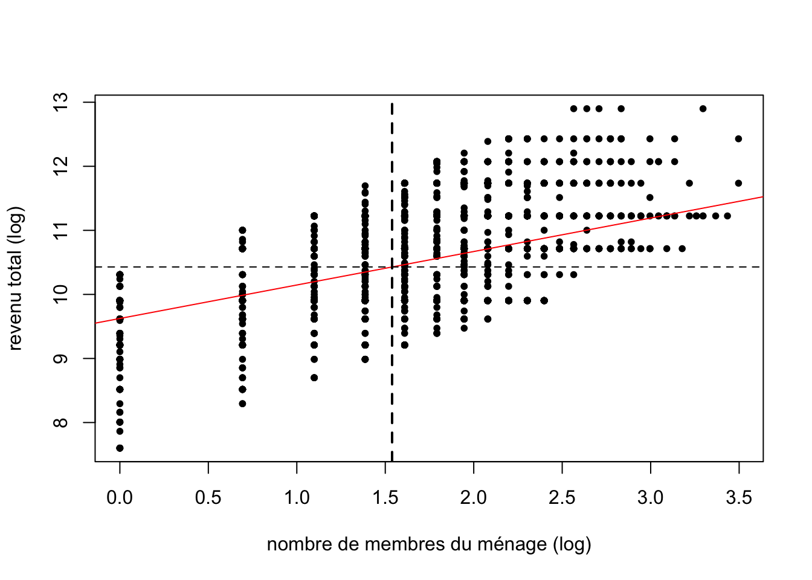
exp(9.624)[1] 15123.42Le pouvoir explicatif du modèle est toujours très significatif un peu plus élevé que précédemment (r2 = 21.5%) et la plupart des défauts statistiques ont été corrigés même s’ils demeurent des imperfections liées au fait qu’on a utilisé des centres de tranches de revenus comportant une certaine imprécision. L’équation du modèle s’écrit donc sous la forme
\(log(Revenu) = 0.523.log(NBmembres) + 9.624\)
Ce que l’on peut transformer en :
\(Revenu = exp[0.523.log(NBmembres) + 9.624]\)
d’où
\(Revenu = exp(9.624) . (NBmembres)^{0.523}\)
et finalement
\(Revenu = 15123 . (NBmembres)^{0.523}\)
Cette équation signifie que le revenu total est en théorie de 15123 CFA pour un ménage d’une personne et qu’il augmente ensuite de façon à peu près proportionnelle à la racine carrée du nombre de membres du ménage (en effet \(X^{0.5} = \sqrt{X}\)). On peut construire un tableau montrant le revenu attendu des ménages en fonction du nombre de personnes :
nb<-c(1:20)
inc<-15123*nb**0.523
df<-data.frame(nb,inc)
kable(df,
caption = "Revenu des ménages en fonction de leur taille",
digits = 0,
col.names = c("Taille du ménage","Revenu attendu")
)| Taille du ménage | Revenu attendu |
|---|---|
| 1 | 15123 |
| 2 | 21731 |
| 3 | 26864 |
| 4 | 31226 |
| 5 | 35091 |
| 6 | 38602 |
| 7 | 41843 |
| 8 | 44870 |
| 9 | 47721 |
| 10 | 50424 |
| 11 | 53001 |
| 12 | 55469 |
| 13 | 57840 |
| 14 | 60126 |
| 15 | 62335 |
| 16 | 64475 |
| 17 | 66552 |
| 18 | 68572 |
| 19 | 70538 |
| 20 | 72456 |
Ou bien sous forme graphique :
nb<-c(1:40)
inc<-15123*nb**0.523 / 1000
plot(nb,inc,
type="l",
xlab = "Taille du ménage (nb. membres)",
ylab = "Revenu du ménage (1000 CFA)",
main = "Modélisation du revenu des ménages en fonction de leur taille",
col="red")
grid()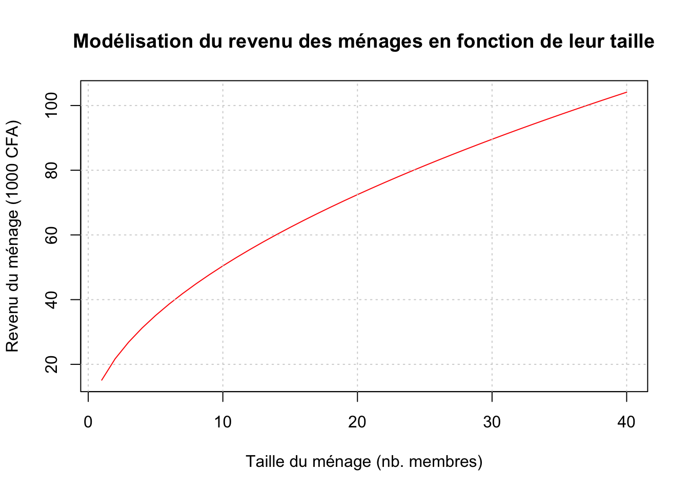
Discussion
Compte-tenu du caractère non-linéaire de la relation entre revenu et taille du ménage, il serait peu judicieux de calculer un indicateur tel que le revenu moyen par personne. Il semble plus judicieux de prendre comme indicateur de richesse relative du ménage le rapport entre la valeur observée et la valeur théorique selon le modèle défini ci-dessus.
sel$hou_rich <- sel$hou_inc/(15123*(sel$hou_mbr**0.523))C. Analyse des déterminants de la richesse relative du ménage
On se propose d’expliquer la variable hou_rich qui a été créée à l’étape précédente et qui mesure sa richesse relative, toutes choses égales quant à sa taille.
Forme de la distribution
Y<-sel$hou_rich
labelY<-"Richesse relative "
hist(Y, main=labelY,breaks = 12)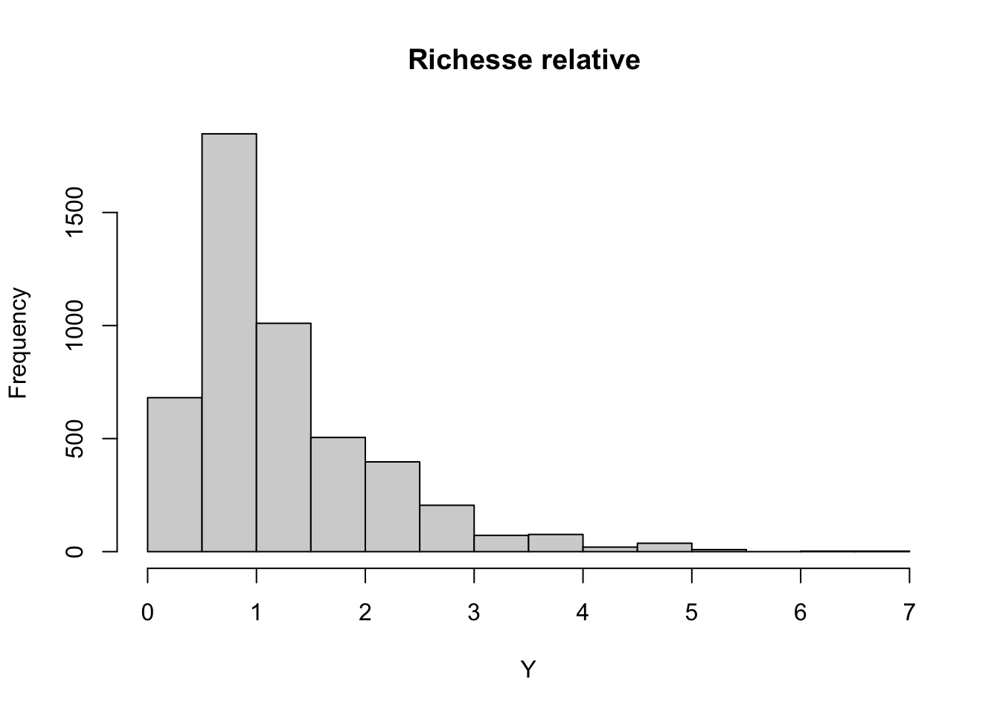
hist(log10(Y), main=labelY, xlab = "logarithme décimal", breaks=12)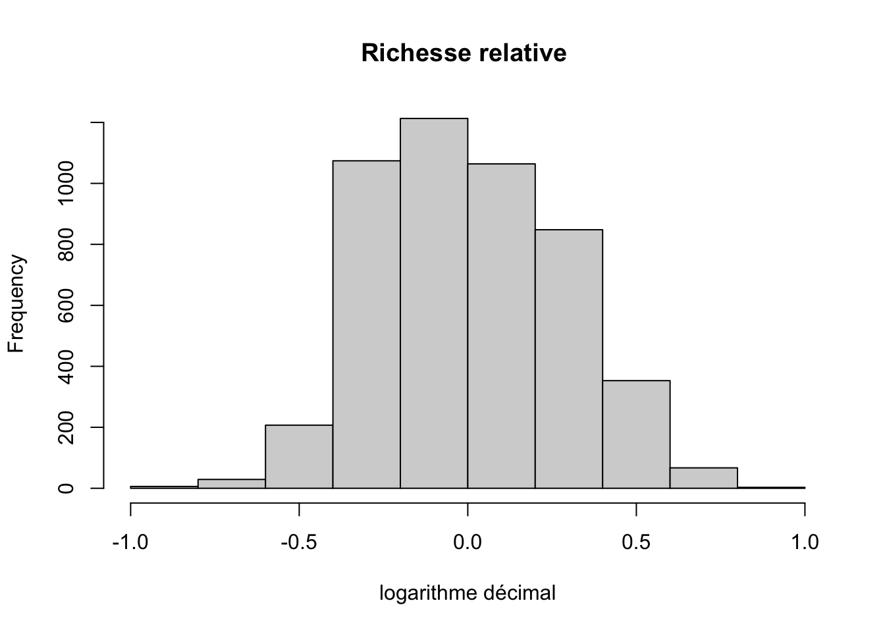
La distribution est unimodale mais asymétrique à gauche. Après transformation logarithmique elle apparaît plus symétrique.
Valeurs exceptionnelles
boxplot(Y, main=labelY, horizontal=T)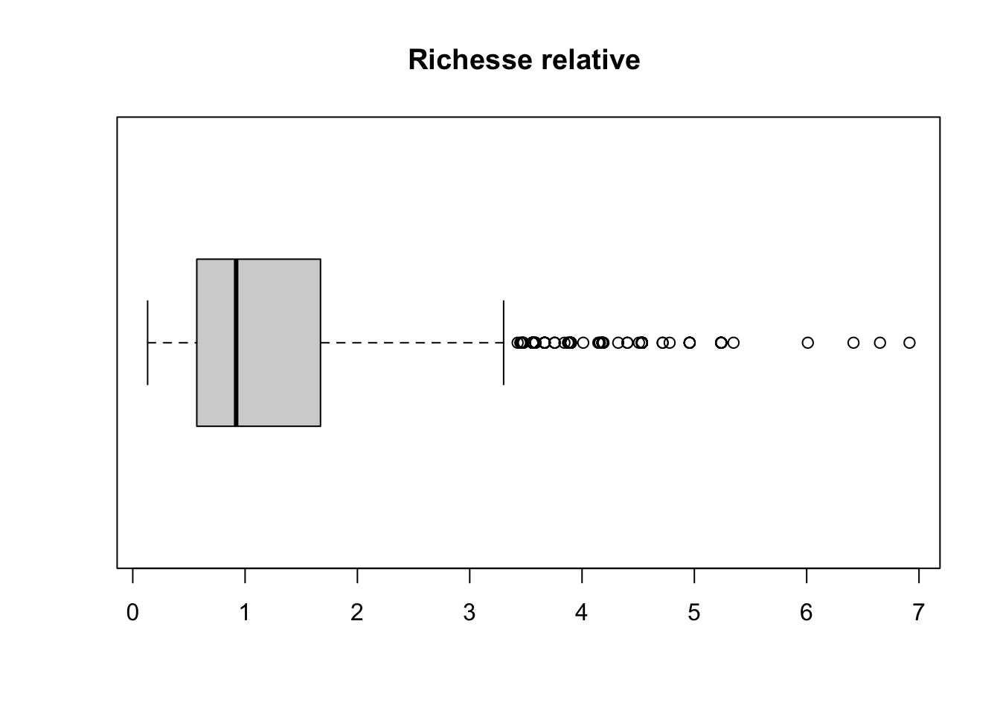
boxplot(log(Y), main=labelY, horizontal=T, xlab = "Logarithme décimal")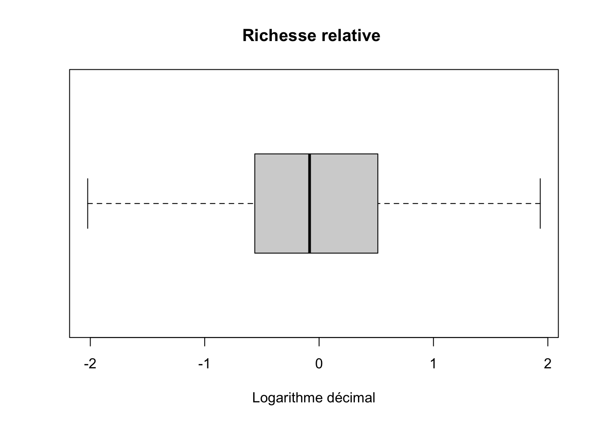
La distribution comporte des valeurs exceptionnelles mais celles-ci disparaissent pratiquement après transformation logarithmique.
Normalité
shapiro.test(Y)
Shapiro-Wilk normality test
data: Y
W = 0.84285, p-value < 2.2e-16shapiro.test(log(Y))
Shapiro-Wilk normality test
data: log(Y)
W = 0.97933, p-value < 2.2e-16- Commentaire : La distribution n’est pas gaussienne et elle ne le devient pas non plus après transformation logarithmique en raison de la cocnentration des valeurs autour de 20000 (Cf. introduction). On décide de poursuivre l’analyse en utilisant désormais le log. du revenu
Y<-log(sel$hou_rich)
labelY<-"Richesse relative (log)"On va tester l’effet de variables indépendantes qualitatives
Modèle 1 : Les ménages urbains sont-ils plus riches ?
Q1<-as.factor(sel$loc_urb)
levels(Q1)<-c("Rural","Urbain")
labelQ1 = "Milieu urbain ou rural"
plot(Y~Q1,cex.axis=0.6, xlab=labelQ1, ylab=labelY)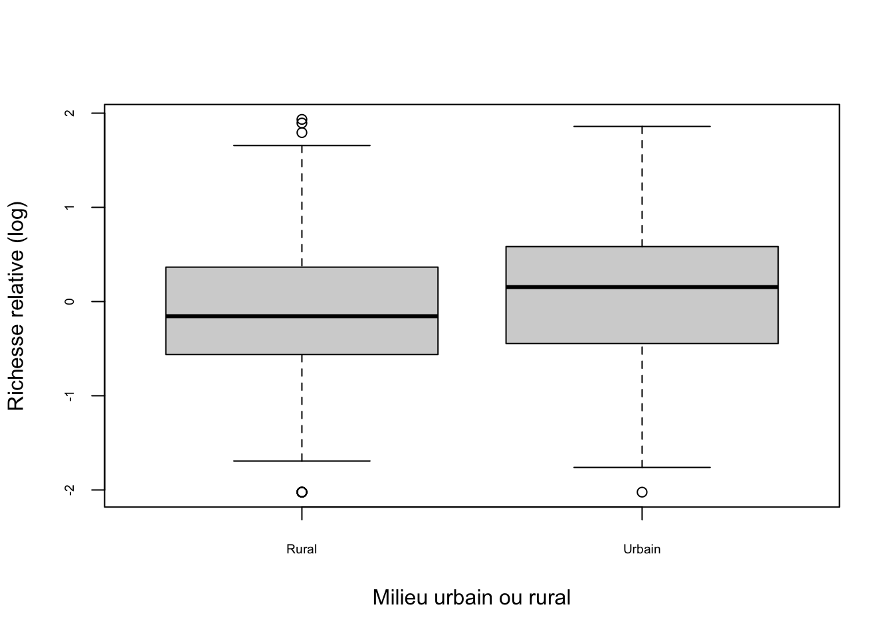
mod<-lm(Y~Q1)
summary(mod)
Call:
lm(formula = Y ~ Q1)
Residuals:
Min 1Q Median 3Q Max
-2.1191 -0.5415 -0.0233 0.4751 2.0118
Coefficients:
Estimate Std. Error t value Pr(>|t|)
(Intercept) -0.07806 0.01242 -6.284 3.58e-10 ***
Q1Urbain 0.17410 0.01852 9.403 < 2e-16 ***
---
Signif. codes: 0 '***' 0.001 '**' 0.01 '*' 0.05 '.' 0.1 ' ' 1
Residual standard error: 0.6424 on 4862 degrees of freedom
Multiple R-squared: 0.01786, Adjusted R-squared: 0.01766
F-statistic: 88.41 on 1 and 4862 DF, p-value: < 2.2e-16anova(mod)Analysis of Variance Table
Response: Y
Df Sum Sq Mean Sq F value Pr(>F)
Q1 1 36.49 36.489 88.407 < 2.2e-16 ***
Residuals 4862 2006.72 0.413
---
Signif. codes: 0 '***' 0.001 '**' 0.01 '*' 0.05 '.' 0.1 ' ' 1- Commentaire : les ménages urbains sont légèrement plus riches que les ménages ruraux. La relation est significative mais son pouvoir explicatif est faible. La différence relative est égale à 0.174 en log soit un rapport de \(exp(0.174) = 1.19\) qui implique une richesse supérieure d’environ 19% pour les ménages urbains.
Modèle 2 : Les ménages dont le chef est un homme sont-ils plus riches ?
Q2<-as.factor(sel$hea_sex)
levels(Q2)[1] "Female" "Male" levels(Q2)<-c("Femme","Homme")
labelQ2 = "Sexe du chef de ménage"
plot(Y~Q2,cex.axis=0.6, xlab=labelQ2, ylab=labelY)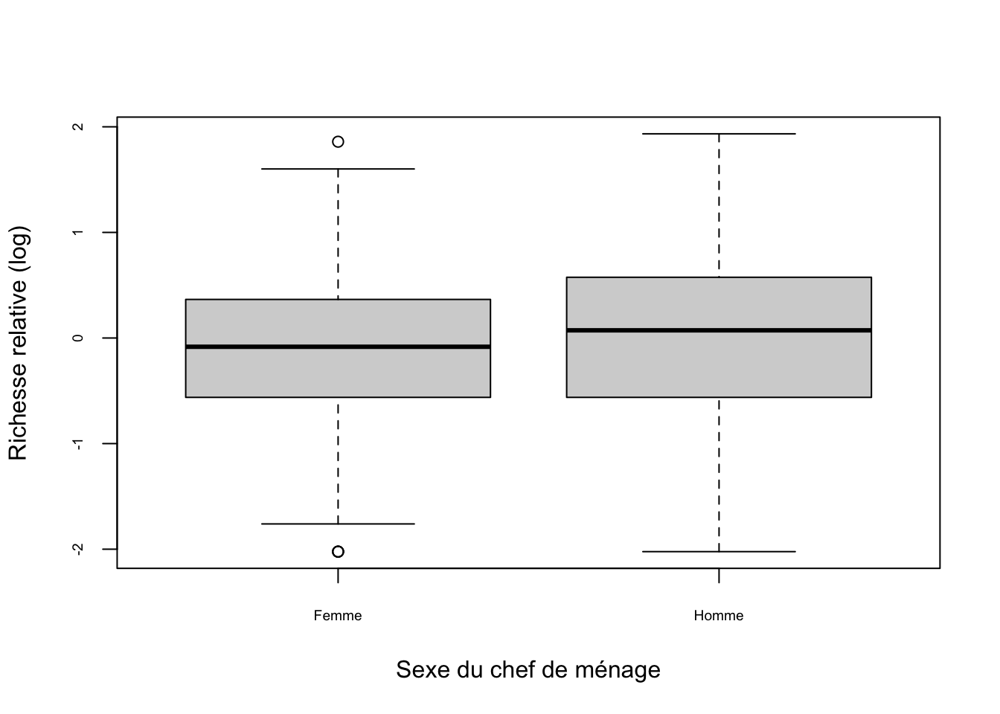
mod<-lm(Y~Q2)
summary(mod)
Call:
lm(formula = Y ~ Q2)
Residuals:
Min 1Q Median 3Q Max
-2.07604 -0.49849 -0.00969 0.46290 1.93225
Coefficients:
Estimate Std. Error t value Pr(>|t|)
(Intercept) -0.07331 0.01432 -5.118 3.21e-07 ***
Q2Homme 0.12629 0.01876 6.730 1.89e-11 ***
---
Signif. codes: 0 '***' 0.001 '**' 0.01 '*' 0.05 '.' 0.1 ' ' 1
Residual standard error: 0.6453 on 4862 degrees of freedom
Multiple R-squared: 0.009231, Adjusted R-squared: 0.009027
F-statistic: 45.3 on 1 and 4862 DF, p-value: 1.888e-11anova(mod)Analysis of Variance Table
Response: Y
Df Sum Sq Mean Sq F value Pr(>F)
Q2 1 18.86 18.8602 45.298 1.888e-11 ***
Residuals 4862 2024.35 0.4164
---
Signif. codes: 0 '***' 0.001 '**' 0.01 '*' 0.05 '.' 0.1 ' ' 1- Commentaire : les ménages dont le chef est un homme sont légèrement plus riches que les ménages dont le chef est une femme . La relation est significative mais son pouvoir explicatif est faible. La différence relative est égale à 0.126 en log soit un rapport de \(exp(0.126) = 1.13\) qui implique une richesse supérieure d’environ 13% pour les ménages dont le chef est un homme.
Modèle 3 : La richesse des ménages varie-t-elle selon les départements
Q3<-as.factor(substr(sel$loc_dep,1,3))
labelQ3 <- "Département"
plot(Y~Q3,cex.axis=0.6, xlab=labelQ3, ylab=labelY)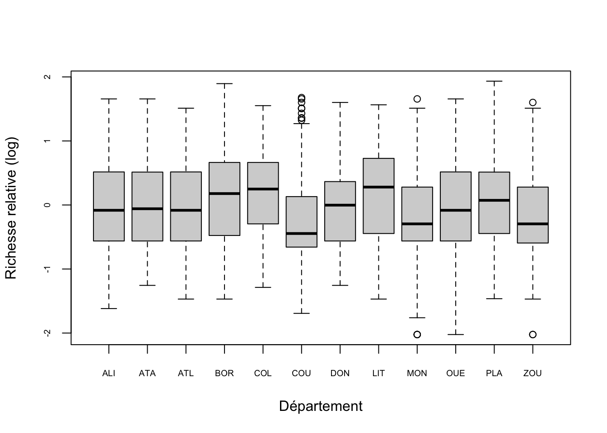
mod<-lm(Y~Q3)
summary(mod)
Call:
lm(formula = Y ~ Q3)
Residuals:
Min 1Q Median 3Q Max
-2.02674 -0.50092 -0.04339 0.46192 1.94100
Coefficients:
Estimate Std. Error t value Pr(>|t|)
(Intercept) -0.009793 0.034441 -0.284 0.77617
Q3ATA -0.006997 0.046921 -0.149 0.88147
Q3ATL -0.005519 0.049791 -0.111 0.91175
Q3BOR 0.151092 0.046324 3.262 0.00112 **
Q3COL 0.176282 0.044632 3.950 7.94e-05 ***
Q3COU -0.254332 0.045433 -5.598 2.29e-08 ***
Q3DON 0.016994 0.047645 0.357 0.72135
Q3LIT 0.208135 0.046921 4.436 9.38e-06 ***
Q3MON -0.146867 0.045895 -3.200 0.00138 **
Q3OUE 0.013460 0.045086 0.299 0.76531
Q3PLA 0.087189 0.045872 1.901 0.05740 .
Q3ZOU -0.155016 0.049229 -3.149 0.00165 **
---
Signif. codes: 0 '***' 0.001 '**' 0.01 '*' 0.05 '.' 0.1 ' ' 1
Residual standard error: 0.6341 on 4852 degrees of freedom
Multiple R-squared: 0.0451, Adjusted R-squared: 0.04293
F-statistic: 20.83 on 11 and 4852 DF, p-value: < 2.2e-16anova(mod)Analysis of Variance Table
Response: Y
Df Sum Sq Mean Sq F value Pr(>F)
Q3 11 92.15 8.3768 20.832 < 2.2e-16 ***
Residuals 4852 1951.06 0.4021
---
Signif. codes: 0 '***' 0.001 '**' 0.01 '*' 0.05 '.' 0.1 ' ' 1